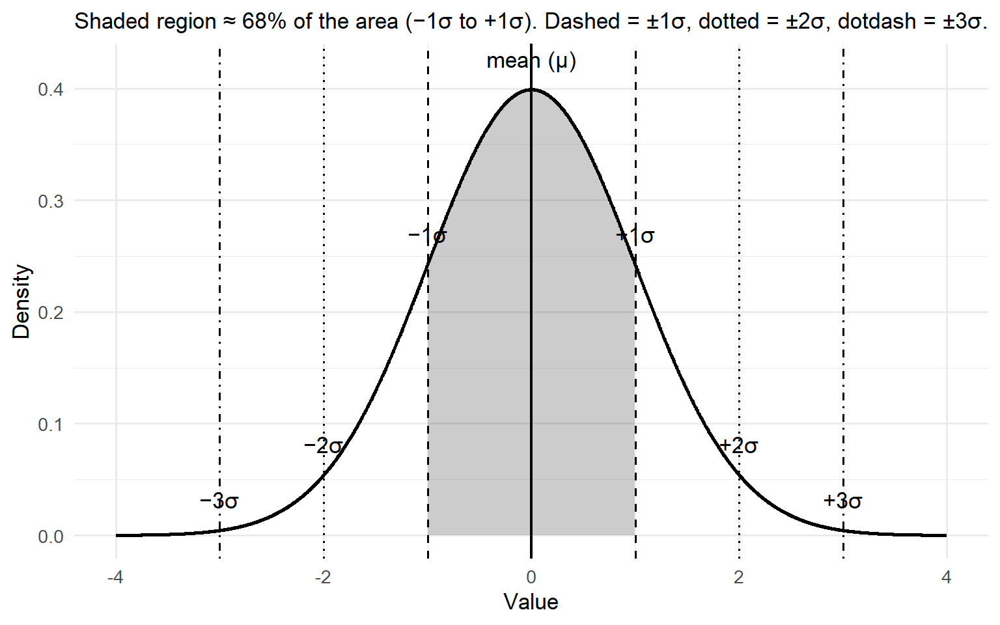

Galton, Pearson, and why we still check assumptions
Author
The Shadow of the Bell Curve
Francis Galton loved to measure things. In the Victorian world of steam engines and gas lamps, he believed that almost everything — from the size of peas to the height of people — could be reduced to numbers. His experiments often bordered on the eccentric: he timed how fast people could whistle a tune, drew maps of “beauty” across cities, and even studied fingerprints long before they were used in forensics. But beneath the quirkiness was a powerful insight: when you measured enough individuals, a strange order seemed to emerge from the chaos.
Galton built a contraption he called the Quincunx, a wooden board studded with rows of pegs. Drop peas in at the top, and they bounce left or right at random until they settle at the bottom. Each journey is unpredictable, but the final pattern is always the same: the peas pile up into a graceful bell curve.
To Galton, this was not just a toy. It was a revelation: chance does not mean chaos, but order in disguise. Nature had a hidden geometry, a gentle tug that pulled outcomes toward the centre.
Mathematicians before him, from de Moivre to Laplace, had already formalised this idea in what we now call the Central Limit Theorem: when many small random influences accumulate, the result tends to follow a normal, bell-shaped pattern. Galton’s brilliance was to make this otherwise abstract truth visible. His board gave students and scientists a way to see probability in action.
And beyond this, in his studies of heredity, Galton noticed something similar: tall parents usually have children a little shorter, and short parents usually have children a little taller. He called this tendency “regression to the mean.” Different problem, same central insight — randomness, when seen in the aggregate, bends toward balance. Galton believed this curve wasn’t just a pattern in peas, but a law of life itself.
One of Galton’s most devoted students, Karl Pearson, carried this vision forward. Pearson admired Galton almost to the point of worship. To him, Galton was a genius who had glimpsed an underlying truth about the universe. But Pearson wanted to take it further. While Galton had focused on averages and general tendencies, Pearson asked a new question: what about relationships?
Pearson worked with Galton’s height data, comparing parents with their children. He wanted to quantify just how strongly one predicted the other. From this pursuit came the correlation coefficient — that little number between −1 and 1 that you still use today to judge the strength of an association. Suddenly, relationships in data could be expressed with precision: not just “tall parents have tall kids,” but “the relationship is this strong.” It was a stunning leap forward.
But there was a catch. Pearson took Galton’s rough idea of correlation and hammered it into precise formulas. Yet the mathematics behaved most beautifully when the data followed the smooth, symmetric bell curve that Galton had idolised with his Quincunx. If your data wandered too far from that shape (skewed, heavy-tailed, or lopsided), the formulas could mislead.
In other words, Pearson’s correlation was born in the shadow of Galton’s bell curve. The apple didn’t fall far from the tree: a new science was built on the same foundation of normality. That’s why, even today, statisticians are trained to check assumptions before trusting their tests.
Here is where the story becomes important for you today. Pearson’s brilliance was real, but he was also constrained by his teacher’s worldview. He had stood on the shoulders of a giant, but the shadow of that giant meant he looked at data through the lens of the bell curve. It is no accident that so many of the statistical tests we use still begin with the question: does your data follow a normal distribution?
This is why modern statistical practice is so full of caveats, assumptions, and diagnostic checks. When your software warns you that your sample is skewed, or that variances are unequal, it is pointing back to this history. Galton and Pearson built tools that assume a certain kind of order in the data. But the real world is often lopsided, messy, and resistant to those tidy shapes.
So what’s the point? - Those warnings from your stats software aren’t just nagging. They are echoes of Galton and Pearson, whose tools only worked cleanly under the bell curve.
When you check for normality, you’re not blindly following rules — you’re asking whether your data is playing by the rules that Galton’s Quincunx and Pearson’s formulas assumed.
And when the rules break, you’re stepping into the same dilemma they faced: how far can we trust conclusions built on a geometry of symmetry, when real life so often bends and skews away from the centre?
The story of Galton and Pearson is a story about genius — but also about limitation. The bell curve is elegant, powerful, and deeply useful. Yet it is not reality itself. It is an approximation. And to be a good statistician is not only to use the tools they gave us, but to know when their assumptions begin to crack.
Galton’s Board (Quincunx) — placeholder image
Galton Board Simulator (Self-Contained)
Galton Board
Watch balls bounce through a triangular grid of pegs and build a bell-shaped distribution.
Balls Dropped0
Mean Bin (μ)—
Std Dev (σ)—
Rows+1 Bins13
Balls
Histogram
Theoretical (Binomial / Normal approx)
Tip: increase rows to see the bell curve emerge; add a bias to skew the distribution.
Pearson’s Bell Curve: Mean and Standard Deviation
Code
library(ggplot2)library(dplyr)# Parametersmu <-0sd <-1# Continuous grid for densityx <-seq(mu -4*sd, mu +4*sd, length.out =2000)df <-data.frame(x = x, y =dnorm(x, mean = mu, sd = sd))# Regions for shading: (-3,-2), (-2,-1), (-1,1), (1,2), (2,3)cuts <-c(-Inf, -3, -2, -1, 1, 2, 3, Inf)labels <-c("<-3σ", "[-3σ,-2σ]", "[-2σ,-1σ]", "[-1σ,1σ]", "[1σ,2σ]", "[2σ,3σ]", ">3σ")df$band <-cut(df$x, breaks = cuts, labels = labels, right =TRUE, include.lowest =TRUE)# Helper to compute area percentages for annotated bands (approximate by numerical integration)area <- df %>%group_by(band) %>%summarise(p =sum(y) * (max(x) -min(x)) / (length(x) -1), .groups ="drop") %>%mutate(pct =round(100*p, 1))# Build plotp <-ggplot(df, aes(x, y)) +# Shaded middle 68% (-1σ to 1σ)geom_area(data =subset(df, x >= mu - sd & x <= mu + sd),aes(y = y), alpha =0.25) +# Outline of the densitygeom_line(linewidth =1) +# Mean and SD guide linesgeom_vline(xintercept = mu, linetype ="solid", linewidth =0.8) +geom_vline(xintercept = mu +c(-1, 1)*sd, linetype ="dashed", linewidth =0.6) +geom_vline(xintercept = mu +c(-2, 2)*sd, linetype ="dotted", linewidth =0.6) +geom_vline(xintercept = mu +c(-3, 3)*sd, linetype ="dotdash", linewidth =0.6) +# Labels for mean and SDsannotate("text", x = mu, y =dnorm(mu, mu, sd) +0.02, label ="mean (μ)", vjust =0) +annotate("text", x = mu + sd, y =dnorm(mu + sd, mu, sd) +0.02, label ="+1σ", vjust =0) +annotate("text", x = mu - sd, y =dnorm(mu - sd, mu, sd) +0.02, label ="−1σ", vjust =0) +annotate("text", x = mu +2*sd, y =dnorm(mu +2*sd, mu, sd) +0.02, label ="+2σ", vjust =0) +annotate("text", x = mu -2*sd, y =dnorm(mu -2*sd, mu, sd) +0.02, label ="−2σ", vjust =0) +annotate("text", x = mu +3*sd, y =dnorm(mu +3*sd, mu, sd) +0.02, label ="+3σ", vjust =0) +annotate("text", x = mu -3*sd, y =dnorm(mu -3*sd, mu, sd) +0.02, label ="−3σ", vjust =0) +labs(x ="Value", y ="Density",subtitle ="Shaded region ≈ 68% of the area (−1σ to +1σ). Dashed = ±1σ, dotted = ±2σ, dotdash = ±3σ.") +theme_minimal(base_size =13)p

Figure 1: Normal curve with mean and ±1/2/3 standard deviation divisions (the 68–95–99.7 rule).
Source Code
---title: "The mean: Beginnings"subtitle: "Galton, Pearson, and why we still check assumptions"author: " "format: html: toc: false theme: cosmo code-fold: true code-tools: trueexecute: echo: true warning: false message: false---## The Shadow of the Bell CurveFrancis Galton loved to measure things. In the Victorian world of steam engines and gas lamps, he believed that almost everything — from the size of peas to the height of people — could be reduced to numbers. His experiments often bordered on the eccentric: he timed how fast people could whistle a tune, drew maps of “beauty” across cities, and even studied fingerprints long before they were used in forensics. But beneath the quirkiness was a powerful insight: when you measured enough individuals, a strange order seemed to emerge from the chaos.Galton built a contraption he called the Quincunx, a wooden board studded with rows of pegs. Drop peas in at the top, and they bounce left or right at random until they settle at the bottom. Each journey is unpredictable, but the final pattern is always the same: the peas pile up into a graceful bell curve.To Galton, this was not just a toy. It was a revelation: chance does not mean chaos, but order in disguise. Nature had a hidden geometry, a gentle tug that pulled outcomes toward the centre.Mathematicians before him, from de Moivre to Laplace, had already formalised this idea in what we now call the Central Limit Theorem: when many small random influences accumulate, the result tends to follow a normal, bell-shaped pattern. Galton’s brilliance was to make this otherwise abstract truth visible. His board gave students and scientists a way to see probability in action.And beyond this, in his studies of heredity, Galton noticed something similar: tall parents usually have children a little shorter, and short parents usually have children a little taller. He called this tendency “regression to the mean.” Different problem, same central insight — randomness, when seen in the aggregate, bends toward balance. Galton believed this curve wasn’t just a pattern in peas, but a law of life itself.One of Galton’s most devoted students, **Karl Pearson**, carried this vision forward. Pearson admired Galton almost to the point of worship. To him, Galton was a genius who had glimpsed an underlying truth about the universe. But Pearson wanted to take it further. While Galton had focused on averages and general tendencies, Pearson asked a new question: what about **relationships**?Pearson worked with Galton’s height data, comparing parents with their children. He wanted to quantify just how strongly one predicted the other. From this pursuit came the **correlation coefficient** — that little number between −1 and 1 that you still use today to judge the strength of an association. Suddenly, relationships in data could be expressed with precision: not just “tall parents have tall kids,” but “the relationship is this strong.” It was a stunning leap forward.But there was a catch. Pearson took Galton’s rough idea of correlation and hammered it into precise formulas. Yet the mathematics behaved most beautifully when the data followed the smooth, symmetric bell curve that Galton had idolised with his Quincunx. If your data wandered too far from that shape (skewed, heavy-tailed, or lopsided), the formulas could mislead.In other words, Pearson’s correlation was born in the shadow of Galton’s bell curve. The apple didn’t fall far from the tree: a new science was built on the same foundation of normality. That’s why, even today, statisticians are trained to check assumptions before trusting their tests.Here is where the story becomes important for you today. Pearson’s brilliance was real, but he was also constrained by his teacher’s worldview. He had stood on the shoulders of a giant, but the shadow of that giant meant he looked at data through the lens of the bell curve. It is no accident that so many of the statistical tests we use still begin with the question: *does your data follow a normal distribution?*This is why modern statistical practice is so full of caveats, assumptions, and diagnostic checks. When your software warns you that your sample is skewed, or that variances are unequal, it is pointing back to this history. Galton and Pearson built tools that assume a certain kind of order in the data. But the real world is often lopsided, messy, and resistant to those tidy shapes.So what's the point?- Those warnings from your stats software aren’t just nagging. They are echoes of Galton and Pearson, whose tools only worked cleanly under the bell curve.- When you check for normality, you’re not blindly following rules — you’re asking whether your data is playing by the rules that Galton’s Quincunx and Pearson’s formulas assumed.- And when the rules break, you’re stepping into the same dilemma they faced: how far can we trust conclusions built on a geometry of symmetry, when real life so often bends and skews away from the centre?The story of Galton and Pearson is a story about genius — but also about limitation. The bell curve is elegant, powerful, and deeply useful. Yet it is not reality itself. It is an approximation. And to be a good statistician is not only to use the tools they gave us, but to know when their assumptions begin to crack.------------------------------------------------------------------------## Galton's Board (Quincunx) — *placeholder image*::: {.galtonboard}```{=html}<!DOCTYPE html><html lang="en"><head><meta charset="UTF-8" /><meta name="viewport" content="width=device-width, initial-scale=1" /><title>Galton Board Simulator (Self-Contained)</title><style> :root{ --bg:#0b1020; --panel:#121a33; --ink:#e6ecff; --muted:#9fb0ff; --accent:#6ee7ff; --accent2:#a78bfa; --good:#34d399; --warn:#f59e0b; } html,body{height:100%;margin:0;background:linear-gradient(180deg,#0b1020,#090d1a);color:var(--ink);font-family:system-ui,-apple-system,Segoe UI,Roboto,Ubuntu,Cantarell,Inter,Arial,sans-serif} .wrap{display:grid;grid-template-columns:320px 1fr;gap:16px;max-width:1200px;margin:24px auto;padding:0 16px} .panel{background:var(--panel);border-radius:16px;padding:16px;box-shadow:0 10px 30px rgba(0,0,0,.25), inset 0 1px 0 rgba(255,255,255,.04)} h1{font-size:20px;margin:0 0 8px;letter-spacing:.3px} .sub{color:var(--muted);font-size:13px;margin-bottom:12px} .controls{display:grid;gap:10px} .row{display:flex;align-items:center;gap:10px} .row label{flex:1 1 auto;font-size:13px;color:var(--muted)} .row input[type="range"]{flex:2 1 auto} .btns{display:grid;grid-template-columns:repeat(3,1fr);gap:8px} button{ background:linear-gradient(180deg,#1b264f,#162042); color:var(--ink);border:1px solid rgba(255,255,255,.08); padding:10px 12px;border-radius:12px;cursor:pointer;font-weight:600 } button:hover{filter:brightness(1.1)} button:disabled{opacity:.5;cursor:not-allowed} .readout{display:grid;grid-template-columns:repeat(2,1fr);gap:8px;margin-top:10px} .card{background:rgba(255,255,255,.04);border:1px solid rgba(255,255,255,.06);border-radius:12px;padding:10px} .card b{display:block;font-size:12px;color:var(--muted);margin-bottom:6px} .canvas-wrap{display:grid;gap:12px} canvas{width:100%;height:auto;background:radial-gradient(1200px 600px at 50% -200px, rgba(110,231,255,.06), rgba(0,0,0,0));border-radius:16px} .legend{display:flex;gap:12px;align-items:center;font-size:12px;color:var(--muted)} .swatch{width:14px;height:14px;border-radius:3px;display:inline-block} .sw-blue{background:linear-gradient(180deg,#60a5fa,#3b82f6)} .sw-green{background:linear-gradient(180deg,#34d399,#10b981)} .sw-purple{background:linear-gradient(180deg,#a78bfa,#8b5cf6)} .hint{font-size:12px;color:var(--muted)} a{color:var(--accent)}</style></head><body> <div class="wrap"> <!-- Controls --> <section class="panel"> <h1>Galton Board</h1> <div class="sub">Watch balls bounce through a triangular grid of pegs and build a bell-shaped distribution.</div> <div class="controls"> <div class="row"> <label>Rows (<span id="rowsOut">12</span>)</label> <input id="rows" type="range" min="6" max="18" value="12" /> </div> <div class="row"> <label>Bias to Right (<span id="biasOut">0.50</span>)</label> <input id="bias" type="range" min="0" max="1" step="0.01" value="0.50" /> </div> <div class="row"> <label>Speed (<span id="speedOut">1.00×</span>)</label> <input id="speed" type="range" min="0.5" max="3" step="0.1" value="1" /> </div> <div class="row"> <label>Show Theoretical Curve</label> <input id="showTheo" type="checkbox" checked /> </div> <div class="btns"> <button id="drop1">Drop 1</button> <button id="drop50">Drop 50</button> <button id="auto">Auto-Run</button> <button id="pause">Pause</button> <button id="reset">Reset</button> <button id="clearHist">Clear Histogram</button> </div> <div class="readout"> <div class="card"><b>Balls Dropped</b><span id="count">0</span></div> <div class="card"><b>Mean Bin (μ)</b><span id="mean">—</span></div> <div class="card"><b>Std Dev (σ)</b><span id="sd">—</span></div> <div class="card"><b>Rows+1 Bins</b><span id="bins">13</span></div> </div> <div class="legend" style="margin-top:10px"> <span class="swatch sw-blue"></span> Balls <span class="swatch sw-green"></span> Histogram <span class="swatch sw-purple"></span> Theoretical (Binomial / Normal approx) </div> <p class="hint">Tip: increase rows to see the bell curve emerge; add a bias to skew the distribution.</p> </div> </section> <!-- Canvases --> <section class="canvas-wrap"> <canvas id="board" width="900" height="620"></canvas> <canvas id="hist" width="900" height="220"></canvas> </section> </div><script>(function(){ // ---------- CONFIG / STATE ---------- const board = document.getElementById('board'); const hist = document.getElementById('hist'); const ctx = board.getContext('2d'); const htx = hist.getContext('2d'); const rowsEl = document.getElementById('rows'); const biasEl = document.getElementById('bias'); const speedEl = document.getElementById('speed'); const showTheoEl = document.getElementById('showTheo'); const rowsOut = document.getElementById('rowsOut'); const biasOut = document.getElementById('biasOut'); const speedOut = document.getElementById('speedOut'); const drop1 = document.getElementById('drop1'); const drop50 = document.getElementById('drop50'); const autoBtn = document.getElementById('auto'); const pauseBtn = document.getElementById('pause'); const resetBtn = document.getElementById('reset'); const clearHistBtn = document.getElementById('clearHist'); const countEl = document.getElementById('count'); const meanEl = document.getElementById('mean'); const sdEl = document.getElementById('sd'); const binsEl = document.getElementById('bins'); let ROWS = 12; let BIAS = 0.5; // prob of going right at a peg let SPEED = 1.0; // animation speed multiplier (time scaling) let AUTORUN = false; const PADDING_TOP = 40; const PEG_RADIUS = 4; const BALL_RADIUS = 5; const PEG_COLOR = 'rgba(220,230,255,0.75)'; const BALL_COLOR = '#60a5fa'; const GUIDE_COLOR = 'rgba(255,255,255,0.05)'; let pegs = []; // [{x,y,row}] let bins = []; // counts let balls = []; // active balls with animation state let finished = 0; // total balls landed let lastTime = performance.now(); // Geometry derived values function computeLayout(){ const W = board.width, H = board.height; const rowSpacing = (H - 200 - PADDING_TOP) / (ROWS+1); const colSpacing = Math.min(40, (W - 80) / (ROWS+1)); const startX = W/2; const startY = PADDING_TOP; pegs = []; for(let r=0; r<ROWS; r++){ const y = startY + (r+1)*rowSpacing; const n = r+1; const rowWidth = (n-1)*colSpacing; const x0 = startX - rowWidth/2; for(let c=0;c<n;c++){ pegs.push({x: x0 + c*colSpacing, y, row:r}); } } bins = new Array(ROWS+1).fill(0); balls = []; finished = 0; lastTime = performance.now(); binsEl.textContent = (ROWS+1).toString(); return {rowSpacing, colSpacing, startX, startY}; } let geom = computeLayout(); // ---------- BALL MODEL ---------- // We'll simulate step-to-step targets at each row, choosing L/R with bias. function newBall(){ return { x: board.width/2, y: PADDING_TOP - 10, row: -1, // not yet at first peg row targetX: board.width/2, targetY: geom.startY + geom.rowSpacing, path: [], // sequence of 0/1 (left/right) choices for record landed: false, bin: null, vy: 0, // for easing }; } function advanceBall(b, dt){ // Ease towards target const dy = b.targetY - b.y; const dx = b.targetX - b.x; const dist = Math.hypot(dx, dy); const speed = 500 * SPEED; // px per second if(dist > 0){ const step = Math.min(dist, speed * dt); const ux = dx / dist, uy = dy / dist; b.x += ux * step; b.y += uy * step; } // If reached target row (within epsilon), set next target if(Math.abs(b.y - b.targetY) < 1.5 && Math.abs(b.x - b.targetX) < 1.5){ b.row += 1; if(b.row >= ROWS){ // Landed: compute bin from number of rights const rights = b.path.reduce((a,c)=>a+(c===1),0); const binIndex = rights; // 0..ROWS b.landed = true; b.bin = binIndex; bins[binIndex] += 1; finished += 1; return; } // Choose direction at this peg const goRight = Math.random() < BIAS ? 1 : 0; b.path.push(goRight); // Where to go next: next row's horizontal slot shifts by ±0.5 colSpacing in a triangular lattice const stepsRight = b.path.reduce((a,c)=>a+(c===1),0); const stepsLeft = b.path.length - stepsRight; // relative x offset from center after k rows is (rights - lefts)*0.5 * colSpacing const offset = (stepsRight - stepsLeft) * 0.5 * geom.colSpacing; b.targetY = geom.startY + (b.row+1) * geom.rowSpacing; b.targetX = board.width/2 + offset + (b.row % 2 ? 0 : 0); // (kept simple; lattice alignment encoded in offset) } } // ---------- DRAWING ---------- function drawBoard(){ const W = board.width, H = board.height; ctx.clearRect(0,0,W,H); // Guides ctx.fillStyle = GUIDE_COLOR; ctx.fillRect(0, geom.startY - geom.rowSpacing*0.6, W, 2); // Pegs ctx.fillStyle = PEG_COLOR; for(const p of pegs){ ctx.beginPath(); ctx.arc(p.x, p.y, PEG_RADIUS, 0, Math.PI*2); ctx.fill(); } // Balls for(const b of balls){ ctx.beginPath(); ctx.fillStyle = BALL_COLOR; ctx.arc(b.x, b.y, BALL_RADIUS, 0, Math.PI*2); ctx.shadowColor = 'rgba(96,165,250,0.5)'; ctx.shadowBlur = 8; ctx.fill(); ctx.shadowBlur = 0; } // Bin slots (visual at bottom) const baseY = H - 70; const slotW = (W - 80) / (ROWS+1); ctx.strokeStyle = 'rgba(255,255,255,0.15)'; ctx.lineWidth = 1; for(let i=0;i<ROWS+1;i++){ const x = 40 + i*slotW; ctx.beginPath(); ctx.moveTo(x, baseY); ctx.lineTo(x, H-20); ctx.stroke(); } // baseline ctx.beginPath(); ctx.moveTo(40, baseY); ctx.lineTo(W-40, baseY); ctx.stroke(); } function drawHistogram(){ const W = hist.width, H = hist.height; htx.clearRect(0,0,W,H); const padding = {l:40, r:20, t:20, b:30}; const width = W - padding.l - padding.r; const height = H - padding.t - padding.b; // Axis htx.strokeStyle = 'rgba(255,255,255,0.2)'; htx.lineWidth = 1; htx.beginPath(); htx.moveTo(padding.l, H - padding.b); htx.lineTo(W - padding.r, H - padding.b); htx.moveTo(padding.l, padding.t); htx.lineTo(padding.l, H - padding.b); htx.stroke(); const nBins = ROWS+1; const maxCount = Math.max(1, ...bins); const barW = width / nBins; // Bars for(let i=0;i<nBins;i++){ const x = padding.l + i*barW + 2; const h = (bins[i]/maxCount) * (height); htx.fillStyle = '#34d399'; htx.fillRect(x, H - padding.b - h, Math.max(1, barW - 4), h); } // Labels htx.fillStyle = 'rgba(255,255,255,0.7)'; htx.font = '12px system-ui'; htx.textAlign = 'center'; if(nBins <= 25){ for(let i=0;i<nBins;i++){ const x = padding.l + i*barW + barW/2; htx.fillText(i.toString(), x, H - padding.b + 18); } } else { htx.fillText('Bin index (number of right turns)', padding.l + width/2, H - padding.b + 18); } // Theoretical curve (binomial / normal approx) if(showTheoEl.checked){ const n = ROWS; const p = BIAS; const mu = n*p; const sigma = Math.sqrt(n*p*(1-p)) || 1e-6; // Normal approx samples along x in bins htx.beginPath(); for(let i=0;i<nBins;i++){ const xCenter = padding.l + i*barW + barW/2; // Normal pdf value const z = (i - mu)/sigma; const pdf = (1/Math.sqrt(2*Math.PI)) * Math.exp(-0.5*z*z) / sigma; // Scale pdf to histogram height: match max pdf to maxCount // Compute theoretical expected counts ~ total*Binomial(n,p)[i]; easier: normal approx scaled to total. const total = finished || 1; // Binomial probability via normal approx ~ area over one bin width: use pdf * 1 (discrete step) const prob = pdf; // proportional; rescale with a factor to match total // To match peak scale reasonably: compute normalization by ensuring sum(prob) == 1 } // Better: compute exact Binomial probabilities and draw polyline const probs = []; let logFact = [0]; // precompute log factorials to avoid huge numbers for(let k=1;k<=n;k++) logFact[k] = logFact[k-1] + Math.log(k); function logChoose(n,k){ return logFact[n] - logFact[k] - logFact[n-k]; } for(let k=0;k<=n;k++){ const lp = logChoose(n,k) + k*Math.log(p || 1e-12) + (n-k)*Math.log((1-p) || 1e-12); probs.push(Math.exp(lp)); } // Normalize small numeric errors const sumP = probs.reduce((a,c)=>a+c,0) || 1; const countsTheo = probs.map(pr => pr / sumP * (finished || 1)); htx.beginPath(); for(let i=0;i<nBins;i++){ const x = padding.l + i*barW + barW/2; const h = (countsTheo[i] / Math.max(1, Math.max(...bins), 1)) * height; const y = H - padding.b - h; if(i===0) htx.moveTo(x,y); else htx.lineTo(x,y); } htx.strokeStyle = '#a78bfa'; htx.lineWidth = 2; htx.stroke(); } // Stats const total = bins.reduce((a,c)=>a+c,0); if(total>0){ const mean = bins.reduce((a,c,i)=>a + i*c,0) / total; const variance = bins.reduce((a,c,i)=>a + c*(i-mean)*(i-mean),0) / total; meanEl.textContent = mean.toFixed(2); sdEl.textContent = Math.sqrt(variance).toFixed(2); } else { meanEl.textContent = '—'; sdEl.textContent = '—'; } countEl.textContent = finished.toString(); } // ---------- ANIMATION LOOP ---------- function tick(){ const now = performance.now(); const dt = Math.min(0.05, (now - lastTime)/1000); lastTime = now; // Auto-drop if(AUTORUN && balls.length < 80 * SPEED){ // cap visible balls // stochastic cadence if(Math.random() < 0.9) balls.push(newBall()); } // Step balls for(const b of balls){ if(!b.landed) advanceBall(b, dt); } // Cull landed (keep a short tail at bottom by freezing) balls = balls.filter(b => !b.landed); drawBoard(); drawHistogram(); requestAnimationFrame(tick); } // ---------- HELPERS ---------- function resetAll(keepGeometry=false){ AUTORUN = false; autoBtn.textContent = 'Auto-Run'; if(!keepGeometry){ geom = computeLayout(); } else { // keep pegs layout but clear counts/balls bins = new Array(ROWS+1).fill(0); balls = []; finished = 0; } drawBoard(); drawHistogram(); } function clearHistogram(){ bins = new Array(ROWS+1).fill(0); finished = 0; } // ---------- UI EVENTS ---------- rowsEl.addEventListener('input', e=>{ ROWS = parseInt(rowsEl.value,10); rowsOut.textContent = ROWS.toString(); resetAll(false); }); biasEl.addEventListener('input', e=>{ BIAS = parseFloat(biasEl.value); biasOut.textContent = BIAS.toFixed(2); }); speedEl.addEventListener('input', e=>{ SPEED = parseFloat(speedEl.value); speedOut.textContent = SPEED.toFixed(2)+'×'; }); showTheoEl.addEventListener('change', ()=>{ /* redraw handled in loop */ }); drop1.addEventListener('click', ()=>{ balls.push(newBall()); }); drop50.addEventListener('click', ()=>{ for(let i=0;i<50;i++) balls.push(newBall()); }); autoBtn.addEventListener('click', ()=>{ AUTORUN = !AUTORUN; autoBtn.textContent = AUTORUN ? 'Auto-Running…' : 'Auto-Run'; }); pauseBtn.addEventListener('click', ()=>{ AUTORUN = false; autoBtn.textContent = 'Auto-Run'; }); resetBtn.addEventListener('click', ()=>{ resetAll(false); }); clearHistBtn.addEventListener('click', ()=>{ clearHistogram(); }); // ---------- START ---------- rowsOut.textContent = ROWS.toString(); biasOut.textContent = BIAS.toFixed(2); speedOut.textContent = SPEED.toFixed(2)+'×'; drawBoard(); drawHistogram(); requestAnimationFrame(tick); // ---------- RESPONSIVE (optional) ---------- // Keep canvas width in device pixels to preserve crispness on resize function resizeCanvases(){ const ratio = window.devicePixelRatio || 1; const boardBox = board.getBoundingClientRect(); const histBox = hist.getBoundingClientRect(); const bw = Math.max(700, Math.floor(boardBox.width*ratio)); const hw = Math.max(700, Math.floor(histBox.width*ratio)); if(board.width !== bw){ board.width = bw; } if(hist.width !== hw){ hist.width = hw; } // Height constants scaled for ratio; keep aspect pleasant board.height = Math.floor(620*ratio); hist.height = Math.floor(220*ratio); geom = computeLayout(); } // Initial responsive tweak after layout setTimeout(resizeCanvases, 50); window.addEventListener('resize', ()=>{ resizeCanvases(); });})();</script></body></html>```:::------------------------------------------------------------------------## Pearson’s Bell Curve: Mean and Standard Deviation```{r}#| label: fig-bell-curve#| fig-cap: "Normal curve with mean and ±1/2/3 standard deviation divisions (the 68–95–99.7 rule)."#| fig-width: 8#| fig-height: 5library(ggplot2)library(dplyr)# Parametersmu <-0sd <-1# Continuous grid for densityx <-seq(mu -4*sd, mu +4*sd, length.out =2000)df <-data.frame(x = x, y =dnorm(x, mean = mu, sd = sd))# Regions for shading: (-3,-2), (-2,-1), (-1,1), (1,2), (2,3)cuts <-c(-Inf, -3, -2, -1, 1, 2, 3, Inf)labels <-c("<-3σ", "[-3σ,-2σ]", "[-2σ,-1σ]", "[-1σ,1σ]", "[1σ,2σ]", "[2σ,3σ]", ">3σ")df$band <-cut(df$x, breaks = cuts, labels = labels, right =TRUE, include.lowest =TRUE)# Helper to compute area percentages for annotated bands (approximate by numerical integration)area <- df %>%group_by(band) %>%summarise(p =sum(y) * (max(x) -min(x)) / (length(x) -1), .groups ="drop") %>%mutate(pct =round(100*p, 1))# Build plotp <-ggplot(df, aes(x, y)) +# Shaded middle 68% (-1σ to 1σ)geom_area(data =subset(df, x >= mu - sd & x <= mu + sd),aes(y = y), alpha =0.25) +# Outline of the densitygeom_line(linewidth =1) +# Mean and SD guide linesgeom_vline(xintercept = mu, linetype ="solid", linewidth =0.8) +geom_vline(xintercept = mu +c(-1, 1)*sd, linetype ="dashed", linewidth =0.6) +geom_vline(xintercept = mu +c(-2, 2)*sd, linetype ="dotted", linewidth =0.6) +geom_vline(xintercept = mu +c(-3, 3)*sd, linetype ="dotdash", linewidth =0.6) +# Labels for mean and SDsannotate("text", x = mu, y =dnorm(mu, mu, sd) +0.02, label ="mean (μ)", vjust =0) +annotate("text", x = mu + sd, y =dnorm(mu + sd, mu, sd) +0.02, label ="+1σ", vjust =0) +annotate("text", x = mu - sd, y =dnorm(mu - sd, mu, sd) +0.02, label ="−1σ", vjust =0) +annotate("text", x = mu +2*sd, y =dnorm(mu +2*sd, mu, sd) +0.02, label ="+2σ", vjust =0) +annotate("text", x = mu -2*sd, y =dnorm(mu -2*sd, mu, sd) +0.02, label ="−2σ", vjust =0) +annotate("text", x = mu +3*sd, y =dnorm(mu +3*sd, mu, sd) +0.02, label ="+3σ", vjust =0) +annotate("text", x = mu -3*sd, y =dnorm(mu -3*sd, mu, sd) +0.02, label ="−3σ", vjust =0) +labs(x ="Value", y ="Density",subtitle ="Shaded region ≈ 68% of the area (−1σ to +1σ). Dashed = ±1σ, dotted = ±2σ, dotdash = ±3σ.") +theme_minimal(base_size =13)p```